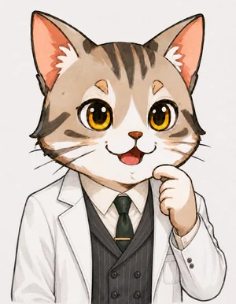

STAGE 2経路検出器を置くと
縞が消える仕組み
🎯 ミッション
検出器を置くと縞が消える理由を、「針の最終状態が直交し、筋書きの終わり方が区別可能になって、矢印を足せなくなるから」と自分の言葉で説明できれば合格。誰も針を読まなくても縞が消える理由まで言えれば満点。
未達成

ねこ博士
では、実験を改造しよう。左スリットのすぐそばに、小さな検出器を置く。粒子が左を通り抜けると、検出器の針が左に倒れる仕掛けだ。右スリットにも同じものを置いて、右を通れば針が右に倒れる。粒子の飛び方はほとんど乱さない、そっと記録するだけの上等な検出器だとしよう。実験結果は知っているね。

うさ美
縞は消えます。そして今日は、理由を導く番です。前回の予想を使うなら――針の倒れた向きが「どちらを通ったか」の手がかりとして残る。だからルールの後半「それぞれ2乗してから足す」が発動して、のっぺりになる。……ただ白状すると、「手がかりが残る」という言い方がまだ少しふわっとしています。何と何を比べて「区別がつく」と判定するのか、正確な手続きを知りたいです。

ねこ博士
そこを詰めるのが今日の仕事だ。鍵はこれだよ。矢印は、粒子だけの道筋につくのではない。関わったものすべてを含めた「世界の筋書き」全体につくんだ。今回の実験の筋書きを、省略せずに最後まで書いてみよう。筋書き1「粒子が左を通り、左の針が倒れ、粒子が点xに当たる」。筋書き2「粒子が右を通り、右の針が倒れ、粒子が点xに当たる」。さて、この2つの筋書きの終わり方を比べてごらん。

うさ美
筋書き1の終わりは「粒子が点xにいて、左の針が倒れている世界」。筋書き2の終わりは「粒子が同じ点xにいて、右の針が倒れている世界」。粒子の側だけ見れば同じなのに、針の状態が違う。つまり2つの筋書きは、違う終わり方をしている――だから区別がつく。だから矢印を足してはいけない。
ねこ博士
その通り。これでルールを完全版に書き直せる。「2つの筋書きは、終わり方まで含めて完全に同じ状態に合流するときだけ、矢印を足せる」。終わりの状態が一部分でも違っていれば――たとえ針1本の向きでも――足し算は禁止で、それぞれ2乗してから確率を足す。ここで用語をひとつ渡そう。「完全に区別できる2つの状態」のことを、物理学者は直交していると言うんだ。左に倒れきった針と右に倒れきった針は直交している。前のステージで縞が出たのは、検出器なしの2つの筋書きが「粒子が点xにいる」というまったく同じ終わり方に合流していたからだよ。
うさ美
待ってください、そこに引っかかります。左を通った粒子と右を通った粒子では、たどった道がまるで違います。それなのに「完全に同じ状態」と言えるんですか？ 途中が違う2つのものを「同じ」と呼ぶのは、ずるをしている気がします。
ねこ博士
いいところに引っかかった。ここで「状態」という言葉の意味をはっきりさせておこう。物理でいう状態とは、いまこの瞬間の、世界のありさまのことで、そこに至るまでの履歴は含まれないんだ。たとえるなら、最後の瞬間に世界全体を写した1枚の写真だね。筋書き1の最後の写真と、筋書き2の最後の写真を並べてみて、どこにも違いが見つからなければ「同じ状態」と判定する。検出器なしの二重スリットで写真に写っているのは、「点xに粒子がいる」ことだけ。左を通ったか右を通ったかという履歴は、どこにも記録が残っていない以上、写真のどこにも写らない。だから2枚は完全に一致して、筋書きは合流できるんだよ。
うさ美
まだ納得しきれません。「どこにも違いが見つからなければ」と言いますが、写真には世界全体が写るんですよね？ 撃つタイミングが少しずれれば気流は揺らぎますし、地球ごと宇宙の中を動いています。隅から隅まで完全に一致する写真なんて、用意できるはずがないと思います。
ねこ博士
そこは、この話でいちばん誤解しやすい急所だ。比べている2枚は、別々の2回の実験の写真ではないんだよ。同じ1発の粒子の、同じ瞬間について、「左を通っていたら」と「右を通っていたら」という2通りの筋書きを並べたものだ。気流のゆらぎも、宇宙の中の地球の位置も、どちらの筋書きにもまったく同じ背景としてそのまま写っている。「同じにする」必要は最初からない――もともと1つの世界の、枝分かれした2通りの話だからね。だから、2枚の写真に違いが生まれうる場所はただひとつ。粒子が途中で触れたものだけだ。真空の装置の中を何にも触れずに飛んだのなら、違いはどこにも生まれようがない。逆に、途中で空気の分子1個にでもぶつかれば、その分子の写り方が2枚で違ってしまう――だから本物の干渉実験は、装置の中を真空にして行うんだ。この「触れたものはすべて写真に写る」という事実がどれほど恐ろしいかは、後のステージでじっくり味わうことになるよ。
うさ美
「何にも触れずに」と言いますが、真空にしたところで、本当に何ものにも影響を与えないなんてことがありうるんでしょうか。粒子は少なくともスリット板の穴を通り抜けるわけで、板とは必ず関わっているはずです。
ねこ博士
実にいいところを突く。その通りで、影響ゼロはありえない。粒子はスリット板に力を及ぼすし、左の穴を通れば板の受ける反動はわずかに左寄り、右なら右寄りになる。実は1927年、物理学者たちが集まったソルベー会議で、まさにそこを突いたのがアインシュタインだった。「スリット板をバネで吊るして反動を測れば、縞を保ったまま、どちらの穴を通ったか分かるはずだ」とね。ボーアの答えはこうだ。条件は「影響を与えないこと」ではなく、「左右で見分けのつく痕跡を残さないこと」。どっしり重く固定された板は、左右の反動のごくわずかな違いを、自分自身の量子的なゆらぎの中に飲み込んでしまう。「左の場合の板」と「右の場合の板」の写真はほとんど完全に重なって、見分けがつかない――手がかりとしてはほぼゼロで、縞はほぼ満点のまま残るんだ。逆に、反動を読み取れるほど軽い板にすれば、たしかに通った穴は分かる。そのかわり計算すると、板の揺れが粒子の矢印の向きを乱して、縞はちょうど消える。どちらを取っても、ルールは破れない。この「見分けのつきにくさは0か100かではなく程度問題」という話は、このあとすぐ主役になるよ。
うさ美
なるほど、途中の道が違うこと自体は問題にならないんですね。問題になるのは、その違いが痕跡として写真に写り込んだときだけ。検出器を置いた場合はまさにそれで、履歴が針の向きという形で残るから、「点x＋左に倒れた針」の写真と「点x＋右に倒れた針」の写真は見分けられる。だから別の状態で、合流できない。……「終わり方まで含めて同じ」という条件は、「最後の写真が完全に一致するか」と読み替えればいいわけですね。ただ、最後にもうひとつ引っかかりが残っています。縞ができる場合とできない場合とでは、粒子の当たる場所の分布が変わりますよね。違いが出るということは、そもそも左経由と右経由とで到達点そのものが違っている、ということになりそうな気がします。到達点が違うなら、終わりの写真も違うはずです。どう考えればいいですか？
ねこ博士
そこも大事な区別だ。答えはこうだよ。道筋は、到達点を決めない。左を通った粒子はスクリーンのどの点にも当たりうるし、右を通った粒子も、やはりどの点にも当たりうる。だからルールの正しい使い方は、こうなる。まずスクリーンの点を1つ選ぶ――たとえば点x。そして「同じ点xで終わる筋書きだけ」を集めて、合流できるかを判定し、その点の明るさを計算する。「左を通って点xへ」と「右を通って点xへ」――比べるのは、いつでもこのペアだ。次に別の点を選んだら、今度はその点で終わる筋書きどうしを比べる。これをスクリーンの全部の点で繰り返してできあがる明るさの一覧表が、分布なんだ。つまり、縞があるかないかというのは各点で計算される確率の「値」が変わるという違いであって、筋書きの到達点がずれるという話ではないんだよ。
うさ美
分かりました。比べる相手はいつも「同じ到達点で終わる筋書き」どうしで、到達点が違う筋書きは写真が違うのだから、最初から合流しない――ルールはそれも正しく区別しているんですね。そうなると、重大なことが言えてしまいます。いまの理屈のどこにも、「誰かが針を読む」という手続きが出てきませんでした。針が倒れた時点で――手がかりが世界のどこかに記録された時点で――終わり方はもう違ってしまっている。ということは、人間が見ても見なくても縞は消える。「観測」に意識は要らない、ですか？
ねこ博士
要らないんだ。これは実験でも確かめられている。検出器を動かしたまま、記録を一度も読み出さず捨ててしまっても、縞は消える。観測の正体は「見ること」ではなく、「手がかりが残ること」。目も意識も脳も、どこにも出てこない。ここが旅の最初の峠だよ。
うさ美
もうひとつ気になることがあります。いまの話は針が「倒れる／倒れない」の両極端でした。もし検出器が中途半端だったら？ たとえば、粒子が通っても針が少ししか傾かない頼りない検出器なら、縞は出るんでしょうか、消えるんでしょうか。0か100かで急に切り替わるのは、かえって不自然な気がします。
ねこ博士
実にいい質問だ。答えは「縞は連続的に薄くなる」。針が少ししか傾かないと、「左のときの針」と「右のときの針」の最終状態は、直交ではなく少しだけ違う状態になる。似た者どうしの状態は部分的に「同じ終わり方」とみなせるから、矢印も部分的に足せる。結果、縞の濃さは満点と0の中間になる。手がかりが完全なら縞は0、手がかりが皆無なら縞は満点。手がかりの完全さと縞の濃さは、正確にシーソーの関係にあるんだ。これも実験で細かく確認されているよ。
うさ美
まとめます。縞を消すのに必要なのは、粒子を乱すことでも、人間が見ることでもなく、「どちらを通ったか」の手がかりが世界のどこかに残ること。残り方が中途半端なら、縞も中途半端に薄まる。……でも博士、そうだとすると逆の手が使えませんか？ 一度残った手がかりを、粒子がスクリーンに当たったあとで消してしまえたら――縞は戻るのでは？
ねこ博士
それこそが次のステージの主役、量子消しゴムだよ。先に答えだけ言っておくと――戻る。ただしその戻り方が、因果律を1ミリも破らない、実に見事な戻り方なんだ。楽しみにしておいで。
粒子が通るたびに針が左または右へ倒れ、「どちらを通ったか」の手がかりが残る。スクリーンに積もる点は、左経由の山と右経由の山を重ねただけの、のっぺりした分布。縞は一度も現れない
左：粒子が左を通ったときの針（青緑）と右を通ったときの針（オレンジ）。2本の開きが「手がかりの完全さ」。右：そのときスクリーンに現れる分布。針の状態が同じ（開き0°）なら縞は満点、直交（開き90°）なら縞は0。中間では薄い縞が残り、0か100かではなく連続的に変わる
【このステージの成果 ― 足し算ルールの完全版】
・矢印は、粒子だけでなく関わったものすべてを含む「筋書き」全体につく
・2つの筋書きは、終わり方まで含めて完全に同じ状態に合流するときだけ矢印を足せる。針1本の向きでも違えば、それぞれ2乗して確率を足す
・「状態」＝最後の瞬間の世界のありさま（1枚の写真）。途中の履歴は含まれない。途中の道の違いは、痕跡として写真に写り込んだときだけ「区別」になる
・比べる2枚は同じ1発・同じ瞬間の「2通りの筋書き」の写真（別々の実験ではない）。気流や地球の位置は共通の背景として最初から同じで、違いが生まれうるのは粒子が途中で触れたものだけ。厳密には影響ゼロはありえず、条件は「左右で見分けのつく痕跡を残さない」こと（重く固定したスリット板の反動は写真がほぼ重なり、手がかりにならない＝アインシュタインとボーアの1927年の論争）
・ルールの使い方：スクリーンの点ごとに「同じ点で終わる筋書き」だけを集めて判定する（道筋は到達点を決めない）。縞の有無は各点の確率の値の違いで、到達点の違う筋書きは写真が違うから最初から合流しない
・完全に区別できる2状態＝直交。針が直交すれば縞は0。読む人がいるかどうかは無関係
・手がかりが不完全なら、縞は連続的に薄くなる（手がかりの完全さと縞の濃さはシーソー）
確認クイズ
Q1. 経路検出器を置くと縞が消える理由として、このステージで導いたものはどれ？
正解！ 粒子をほとんど乱さない検出器でも、針の向きという手がかりが残れば縞は消える。「乱すから消える」説では、この後のステージで見る「手がかりを消すと縞が戻る」現象を説明できない。犯人は乱れではなく、手がかりの記録だ。
Q2. 検出器は動いていて針は毎回倒れるが、記録は誰も一度も読まずに捨てた。縞はどうなる？
正解！ 足し算ルールの判定に使うのは「筋書きの終わり方が同じ状態に合流するか」だけで、「誰かが読むか」はどこにも出てこない。針が倒れた時点で終わり方は違ってしまっている。「観測」に意識や視線は要らない。
Q3. 粒子が通っても針が少ししか傾かない、頼りない検出器を置いた。縞はどうなる？
正解！ 「左のときの針」と「右のときの針」が直交しきらなければ、筋書きは部分的に同じ終わり方に合流でき、矢印も部分的に足せる。縞の濃さと手がかりの完全さはシーソーの関係で、0か100かのスイッチではない。この連続性が、次のステージ以降で環境デコヒーレンスを理解する鍵になる。